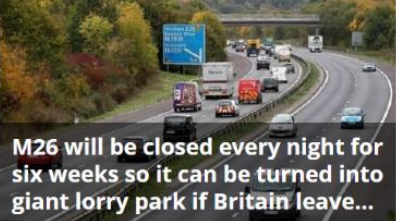
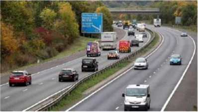
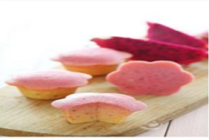
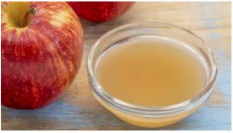

FOOD -2 Tuần Trước
Provided By Associal Newspapers Limidted A Tory MP Revealed work began on Wednesdays night to turn the M26 into a 'parking lot'.File PhotoA...

Provided By Associal Newspapers Limidted A Tory MP Revealed work began on Wednesdays night to turn the M26 into a 'parking lot'.File Photo A major motorways in the South East will be closed every nig...

FOOD -1 Năm Trước
Bánh Thanh Long Muffin Với Màu Sắc Bắt Mắt Vị Ngon Lạ Miệng Khiến Ai Thử Lần Đầu Cũng Mê.Nguyên Liệu-3 Qu...

FOOD -1 Năm Trước
Đến Nay Người Dân Vùng Okiwa,Nhật Bản Vẫn Duy Trì Thói Quen Uống Ly Nước Này Suốt Nhiều Thập Kỉ Qua ...